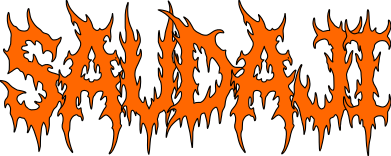
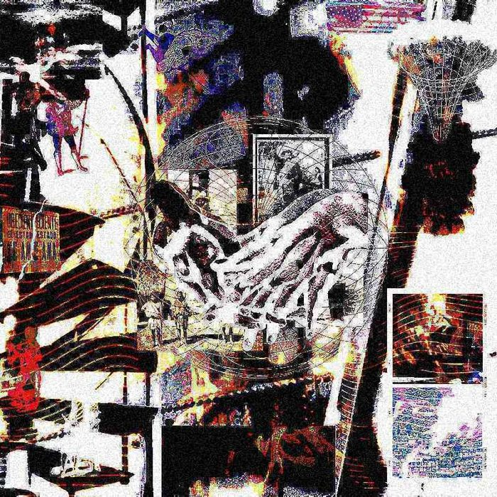

Press kit ↓Bio
Saudaji es el proyecto solista de Santiago Tejeda — productor, compositor, ingeniero de audio y diseñador con base en Ciudad de México. Hace música desde los 18 años y se mueve entre el neofolk, el pop alternativo y las texturas orgánicas, buscando siempre otras formas de producir y componer: canciones que suenan a cuarto, a campo y a máquina al mismo tiempo.
Como solista ha publicado los EPs «tormenta, Callada» (2024) y «☼ ☞ ☺» (2025), además del sencillo «RUIDO» (2025), todos producidos, grabados y mezclados por él mismo bajo una ética DIY. Su música retrata la ansiedad y la belleza de lo cotidiano con un enfoque honesto y artesanal.
Fuera de su proyecto es productor e ingeniero de audio, y socio y dueño de Sagredo Estudio, donde ha colaborado con artistas clave de la escena alternativa mexicana como Wet Baes, ALONG y Los Milagro. Ha tocado en más de la mitad del país y en Los Ángeles, consolidándose como parte de la nueva ola del pop independiente mexicano.
Highlights
- Productor, compositor e ingeniero de audio. Socio y dueño de Sagredo Estudio en CDMX.
- Shows y colaboraciones con Los Milagro, ALONG, Wet Baes, Daniel Quién y BAM BAM ATOM., entre otros.
- Grabaciones con ALONG, Ivana, Doris Anahí, Rafa Arreguín, Fer Altuzar, Ahora Juntos, Disco Bahía y Enzo Marcelo, entre otros.
- Producciones para ALONG, Fer Altuzar, BAM BAM ATOM., Doris Anahí y Ramona Vee, entre otros.
- Presencia en Ibero 90.9 · presentaciones en México y Los Ángeles.
Música solista


Producción · portafolio



Qué costumbre tan salvaje / DOOMINACIÓNPERSONA · 2026Producción · Mezcla · Masterización · Composición
Rider
Rider técnico, input list y stage plot disponibles a solicitud — se ajustan al formato del show (solo, dúo o banda).